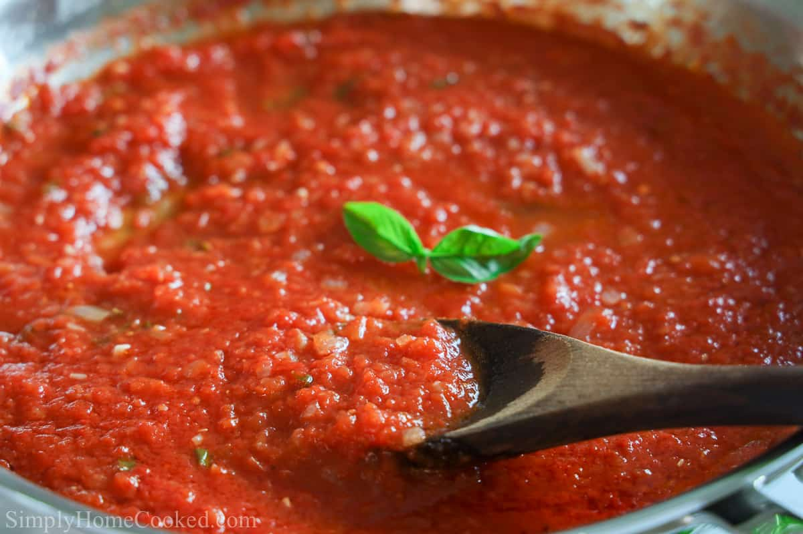

Pomodoro Sauce and Pasta Recipe

Description
A good Pomodoro sauce is simple with few ingredients.
When done right it will taste better than any store bought sause and be much healthier for you.
Ingredients
- Roma Tomatoes
- Fresh Basil leaves (directly from a basil plant is best)
- Sea Salt
- Fresh ground pepper
- Virgin (Cold Pressed) Olive Oil
- Fresh Bulb of Garlic
Steps
- Cut tomatoe ends off and cut tomatoe into 4 pieces
- Chop garlic bulbs or use garlic press
- Fill cooking pan with olive oil. Line entir bottom of pan. Set to low heat.
- Put garlic in pan. Make sure not to burn garlic but let cook for about 2 minutes
- Put chopped tomatoes into pan
- Use masher and mash the tomatoes in pan while cooking. Turn up heat to medium
- Add salt and pepper to taste
- Let simmer for about 15 minutes, ocassionally stirring
- Boil and prepare whatever pasta you desire cooked al dente. Fusilli noodles go great.
- Take basil leaves off plant and put whole leaves into sauce
- Let simmer for no more than 5 minutes once basil is added
- Pour over your pasta
- Grate fresh parmezan cheese on top if desired
- Eat to your hearts content!